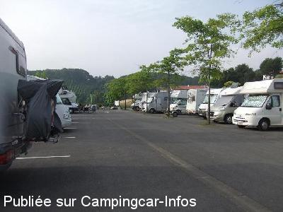
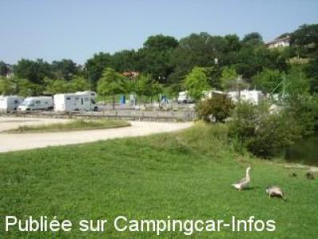
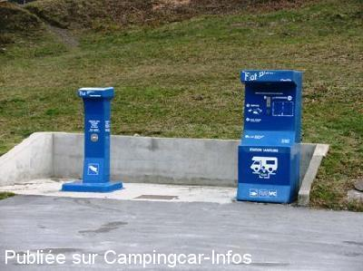
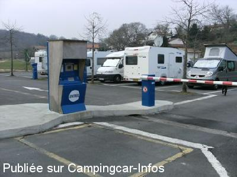

ASN = Aire de services avec stationnement nuit possible de :
SAINT PÉE SUR NIVELLE
(N° 789)
Accès/adresse :
Promenade du Parlement de Navarre
64310 SAINT PÉE SUR NIVELLE
64310 SAINT PÉE SUR NIVELLE
Latitude : (Nord) 43.3494° Décimaux ou 43° 20′ 57′′
Longitude : (Ouest) -1.5214° Décimaux ou -1° 31′ 17′′
Tarif : 2014
Stationnement : 9,50 €
Eau : 2,50 €
Électricité, jetons : 2,50 €/heure
Type de borne : FLOT BLEU
Services :


Bar-tabac
Restaurant
Centre ville à 2 km avec tous commerces
Le boulanger passe tous les jours
Autres informations :
50 emplacements limités à 48 heures
8 prises électriques
http://www.saint-pee-sur-nivelle.com
Prévoir une rallonge pour les eaux usées

Le 19/08/2012 par FONTLOY

Le 19/07/2012 par Gérard du 27 (le 19/7/2012)

Le 18/03/2010 par EXPLORATEUR44

Le 18/03/2010 par EXPLORATEUR44
de
Paul Guntz
le 17/04/2016 :
Passage du 14.04.16 – Aire toujours agréable (même quand il pleut !). Ce n'est de loin pas notre première visite. Mais quand va-t-on remplacer la borne de service toujours encore en délicatesse avec les règles d'hygiène les plus élémentaires ???
Passage du 14.04.16 – Aire toujours agréable (même quand il pleut !). Ce n'est de loin pas notre première visite. Mais quand va-t-on remplacer la borne de service toujours encore en délicatesse avec les règles d'hygiène les plus élémentaires ???
de
lewicki
le 08/10/2014 :
kiki 09/2014
aire très pratique car le bord de cote est inaccessible, cependant attention de ne pas dépasser les 2 jours,car le 3éme jour vous payez 24.5€ en plus des 18.5€ un conseil sortir avec le CC et rentrer à nouveau
kiki 09/2014
aire très pratique car le bord de cote est inaccessible, cependant attention de ne pas dépasser les 2 jours,car le 3éme jour vous payez 24.5€ en plus des 18.5€ un conseil sortir avec le CC et rentrer à nouveau
de
rouglan
le 20/08/2014 :
aout 2014 ,aire trés prisé mais nous avons trouvé une place ,arrivant du portugal via l'espagne tout nous a semblé un peu cher....
aout 2014 ,aire trés prisé mais nous avons trouvé une place ,arrivant du portugal via l'espagne tout nous a semblé un peu cher....
de
Paul Guntz
le 26/03/2014 :
§ De passage le 23/03/14 - tarif 2014 : de 15 mn à 12 h : 5.50 € - de 12 h à 24 h : 9.50 € - de 24 h à 48 h : 18.50 € - Cela peut paraître cher (de nombreux C-C font ½ tour), mais c'est préférable à une aire genre St-Jean-de-Luz où l'on profite des trains d'un côté et de la circulation routière de l'autre. Aire éclairée. N'étions que 4 C-C, donc calme absolu cette nuit. Evidemment, si l'on vient en août…
§ De passage le 23/03/14 - tarif 2014 : de 15 mn à 12 h : 5.50 € - de 12 h à 24 h : 9.50 € - de 24 h à 48 h : 18.50 € - Cela peut paraître cher (de nombreux C-C font ½ tour), mais c'est préférable à une aire genre St-Jean-de-Luz où l'on profite des trains d'un côté et de la circulation routière de l'autre. Aire éclairée. N'étions que 4 C-C, donc calme absolu cette nuit. Evidemment, si l'on vient en août…
de
D & D du 41
le 01/09/2013 :
En accord avec le commentaire précédent, l'aire a le mérite d'exister. Par contre, le tarif est exagéré 9 €, les services en plus (6€ pour 12 heures d'électricité, etc ... Vous trouvez en bord de mer, des tarifs similaires avec les services.
En accord avec le commentaire précédent, l'aire a le mérite d'exister. Par contre, le tarif est exagéré 9 €, les services en plus (6€ pour 12 heures d'électricité, etc ... Vous trouvez en bord de mer, des tarifs similaires avec les services.
de
FONTLOY
le 17/08/2012 :
Aire qui a le mérite d'exister et surtout à ne pas rater si vous aimez les foirails à CC.50 camions garés cote à cote entre le caniche du voisin , les serviettes de bain de l'autre coté , les personnes qui discutent jusqu'à fort tard .Bref les vrais vacances des campings bondés.Avons fui très vite .
Aire qui a le mérite d'exister et surtout à ne pas rater si vous aimez les foirails à CC.50 camions garés cote à cote entre le caniche du voisin , les serviettes de bain de l'autre coté , les personnes qui discutent jusqu'à fort tard .Bref les vrais vacances des campings bondés.Avons fui très vite .
de
Gérard le 19/07/2012
le 19/07/2012 :
Nous sommes passés sur cette aire le 26/6/2012. Le tarif est de 8.50 euros. Le calme est assuré. Il y avait peu de camping-cars en début d'après-midi, mais elle s'est vite remplie en soirée. La base nautique à proximité est agréable. Rien à dire pour le tarif proposé.
Nous sommes passés sur cette aire le 26/6/2012. Le tarif est de 8.50 euros. Le calme est assuré. Il y avait peu de camping-cars en début d'après-midi, mais elle s'est vite remplie en soirée. La base nautique à proximité est agréable. Rien à dire pour le tarif proposé.
de
Frédo40
le 13/06/2012 :
§
Bonsoir, Passage le 08.06.12 au soir pour une nuit, les tarifs 2012 sont toujours les mêmes(8.5€ et 2€ le jeton eau ou 4h d'élec) . L'aire est toujours aussi fonctionnelle et pratique nous étions 27 CC il y avait encore une une bonne quinzaine de places de libres. Nuit très calme et paisible avec le bruit du petit torrent qui vous berce...Baignade possible dans le lac de la base de loisir déserte ce weekend, mais frais pour moi.
§
Bonsoir, Passage le 08.06.12 au soir pour une nuit, les tarifs 2012 sont toujours les mêmes(8.5€ et 2€ le jeton eau ou 4h d'élec) . L'aire est toujours aussi fonctionnelle et pratique nous étions 27 CC il y avait encore une une bonne quinzaine de places de libres. Nuit très calme et paisible avec le bruit du petit torrent qui vous berce...Baignade possible dans le lac de la base de loisir déserte ce weekend, mais frais pour moi.
de
cariou
le 06/01/2012 :
j'y suis passer le29 dec 2011,air tres calme près d'un lac ou nous pouvons faire du vélo,air un peu cher
il faut prendre jetons pour electricité en plus du stationnement boulanger passe tout les jours de l'année
j'y suis passer le29 dec 2011,air tres calme près d'un lac ou nous pouvons faire du vélo,air un peu cher
il faut prendre jetons pour electricité en plus du stationnement boulanger passe tout les jours de l'année
de
cadet marie france
le 18/07/2011 :
pres sympa je'y viens souvent car ma fille habite à cambo mes les nuits impossible de dormir les jeunes en moto ou mobilette ne respecte pas les personnes qui dorment et celà aussi bien en ete ou en hiver dommage car le parking est propre et sympa merci à la mairie de nous accueillir
pres sympa je'y viens souvent car ma fille habite à cambo mes les nuits impossible de dormir les jeunes en moto ou mobilette ne respecte pas les personnes qui dorment et celà aussi bien en ete ou en hiver dommage car le parking est propre et sympa merci à la mairie de nous accueillir
de
Thierry
le 24/07/2010 :
Je suis sur cette aire en ce moment. Les tarifs en ce mois de juillet sont de 5€ les 12 heures et 8,50€ les 24 heures et 17€ de 24h à 48h. Tout cela juste pour se garer. En effet, les services hors électricité sont à l'extérieur et coutent 2€. Sinon, un petit lac, une plage et quelques restaurants autour. Pour l'instant ça a l'air calme... §
Je suis sur cette aire en ce moment. Les tarifs en ce mois de juillet sont de 5€ les 12 heures et 8,50€ les 24 heures et 17€ de 24h à 48h. Tout cela juste pour se garer. En effet, les services hors électricité sont à l'extérieur et coutent 2€. Sinon, un petit lac, une plage et quelques restaurants autour. Pour l'instant ça a l'air calme... §
de
MSilva
le 15/07/2009 :
De passagem no dia 11/07/2009, uma boa área, apenas a lamentar o facto de à saída, o pagamento não se poder fazer também em moedas (só se pode pagar com cartão bancário) - porque nenhum dos nossos cartões funiconava na máquina (um espanhol atrás de nós - também não conseguia fazer o pagamento) - saímos graças a um autocaravanista francês que gentilmente pagou os nossos estacionamentos com os seu cartão (e nós demos-lhe o valor em dinheiro - claro!)
De passagem no dia 11/07/2009, uma boa área, apenas a lamentar o facto de à saída, o pagamento não se poder fazer também em moedas (só se pode pagar com cartão bancário) - porque nenhum dos nossos cartões funiconava na máquina (um espanhol atrás de nós - também não conseguia fazer o pagamento) - saímos graças a um autocaravanista francês que gentilmente pagou os nossos estacionamentos com os seu cartão (e nós demos-lhe o valor em dinheiro - claro!)
de
MICO
le 24/03/2008 :
Bravo à cette municipalité qui a tout compris de nos besoins, prix séparé du stationnement, des services, de l'électricité. Stationnement parfait et au calme au bord du lac, exemple à suivre.
Bravo à cette municipalité qui a tout compris de nos besoins, prix séparé du stationnement, des services, de l'électricité. Stationnement parfait et au calme au bord du lac, exemple à suivre.
de
Gérard
le 15/01/2007 :
Bonjour, Je passe souvent à Saint Pée, le parking est vaste. Resto à coté en saison, le village à pied n'est pas très loin; bien sûr ce n'est pas du gazon par terre !! Mais si toutes les aires étaient comme celle-la. Il faut remercier les municipalités qui offrent ce genre de service aux CC. Le reste est de la littérature.
Bonjour, Je passe souvent à Saint Pée, le parking est vaste. Resto à coté en saison, le village à pied n'est pas très loin; bien sûr ce n'est pas du gazon par terre !! Mais si toutes les aires étaient comme celle-la. Il faut remercier les municipalités qui offrent ce genre de service aux CC. Le reste est de la littérature.